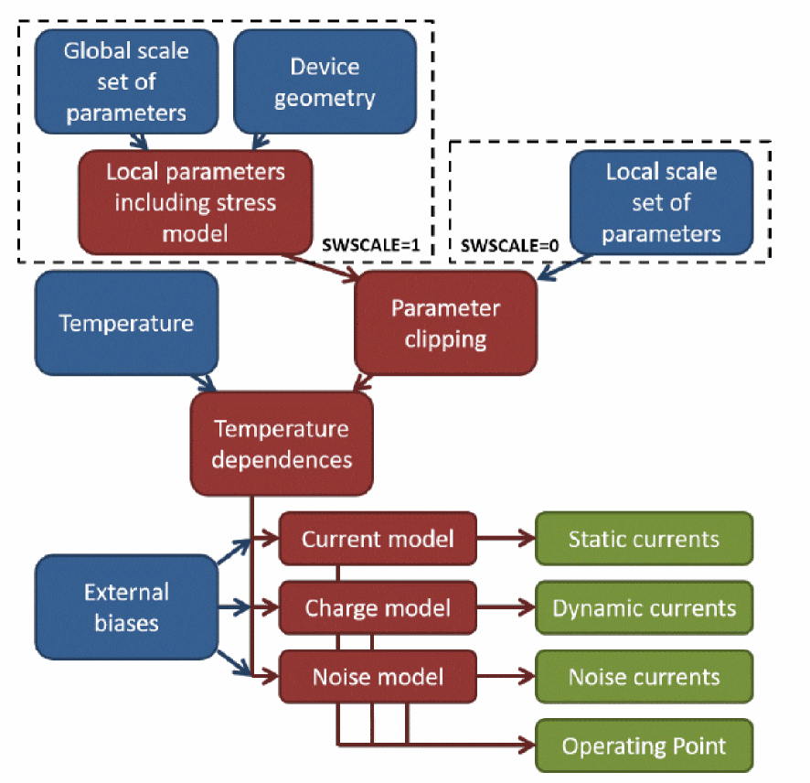

Model Structure
The structure is based on a hierarchical construction featuring two levels of parameter set:
- A local mode, in which the knowledge of the device geometry (channel length and width) is not needed. In this mode, the local parameter values are directly obtained from the model cards.
- A global mode, in which the local parameters are computed from the global model card and the device geometry through scaling laws (see Scaling Equations). The computed local parameters are then used to compute the model equations. In this mode, some local parameters can also be modified according to the stress model (see Stress model for SWSTRESS = 1 and Stress model for SWSTRESS = 2).
The following figure depicts the model structure.

Version Update and Enhancements
L-UTSOI 102.7 Enhancements
The 102.7 version of L-UTSOI includes the following updates:
- The following model parameters are added:
- The following output parameters are added:
- When initializeModel, it uses SWCRYO to control different calculation of TKD.
- The change on op ouput, about "neff_op", "xth_1D_op", "e1_op", "e2_op", "x1sat_op", "x2sat_op".
- The calculation change about local parameters "neff", "neff_poly", "neff_sub","xb_sub", "dVfbpdep" , "xg10", "xg20", "xg20shift".
- Uses SWCRYO to control different calculation of "e1", "e2" in the section "Quantum mechanical corrections below threshold".
- Uses SWCRYO to control different calculation of "xg1x", "xg2x" in the section "Short channel effects".
- Change the calculation about parameter "frscsi" in the section "Mobility attenuation and series resistance at source side".
- Change the calculation about parameter "x_m" in the section "Gate-channel component of gate current".
- Change the flag about "xg1x" in the section "Source/drain partitioning of gate-channel current".
- Change the calculation about parameter "temp" in the section "Outer fringe and overlaps charges".
L-UTSOI 102.6 Enhancements
The 102.6 version of L-UTSOI includes the following updates:
- KDRIFT is added as drift component parameter.
- KDIFF is added as diffusion component parameter.
- FRACINV is added as fraction of inversion charge for the second pole.
- KFRACINV is added as second pole frequency coefficient.
- KDRIFTO is added as geometry-independent drift component parameter.
- KDRIFTL is added as length dependence of KDRIFT.
- KDIFFO is added as geometry-independent diffusion component parameter.
- KDIFFL is added as length dependence of KDIFF.
- FRACINVO is added as geometry-independent fraction of inversion charge for the second pole.
- KFRACINVO is added as geometry-independent second pole frequency coefficient of the NQS transition.
Return to top